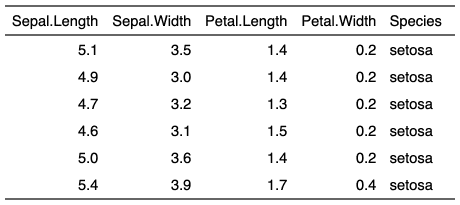
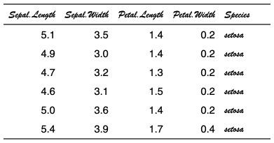

| font {flextable} | R Documentation |
change font of selected rows and columns of a flextable.
font( x, i = NULL, j = NULL, fontname, part = "body", cs.family = fontname, hansi.family = fontname, eastasia.family = fontname )
x |
a flextable object |
i |
rows selection |
j |
columns selection |
fontname |
single character value. With Word and PowerPoint output, the value specifies the font to be used to format characters in the Unicode range (U+0000-U+007F). |
part |
partname of the table (one of 'all', 'body', 'header', 'footer') |
cs.family |
Optional font to be used to format
characters in a complex script Unicode range. For example, Arabic
text might be displayed using the "Arial Unicode MS" font.
Used only with Word and PowerPoint outputs. Its default value is the value
of |
hansi.family |
optional. Specifies the font to be used to format
characters in a Unicode range which does not fall into one of the
other categories.
Used only with Word and PowerPoint outputs. Its default value is the value
of |
eastasia.family |
optional font to be used to
format characters in an East Asian Unicode range. For example,
Japanese text might be displayed using the "MS Mincho" font.
Used only with Word and PowerPoint outputs. Its default value is the value
of |


Other sugar functions for table style:
align(),
bg(),
bold(),
color(),
empty_blanks(),
fontsize(),
highlight(),
italic(),
line_spacing(),
padding(),
rotate(),
valign()
require("gdtools")
fontname <- "Brush Script MT"
if( font_family_exists(fontname) ){
ft_1 <- flextable(head(iris))
ft_2 <- font(ft_1, fontname = fontname, part = "header")
ft_2 <- font(ft_2, fontname = fontname, j = 5)
ft_2
}